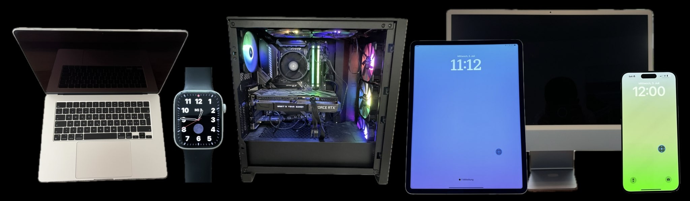

Dies ist mein persönliches Projekt, in dem ich mit verschiedenen Technologien experimentiere und mein Wissen erweitere. Schau dir die verschiedenen Dienste und Tools an, die ich hier betreibe.
Für aufwändige Aufgaben. Nicht 24/7 online, aber sehr leistungsfähig für komplexe Prozesse.
Zur Super AIEin interaktiver Escape Room, bei dem du deine Hacking- und Problemlösungsfähigkeiten testen kannst.
Jahr: 2024
Zur Webseite Riddle GitHubMein Homelab, in dem ich verschiedene Technologien und Projekte teste, entwickle und implementiere.
GitHubA-Ultra ist der YouTube-Kanal für Technik-Tipps und Schritt-für-Schritt-Anleitungen. Hier findest du einfache Lösungen zu verschiedenen Technik-Themen, ideal für alle, die mehr über Smartphones, Controller und barrierefreie Funktionen erfahren möchten. Diese Inhalte werden bald auch auf einer Webseite verfügbar sein, um noch mehr Menschen zu erreichen.
GitHub